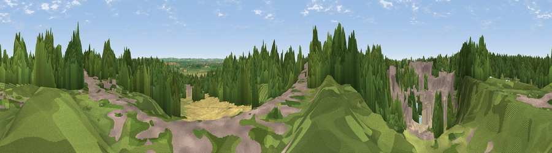

Viewpoint near Tytherington
#37726 in England · top 69% of its area beats it · near TytheringtonWhere it is
The exact computed spot (ST 66325 88675). Click the marker for map links.
The view, rendered

A 360° render of this exact spot computed from the terrain model, tree cover and land cover — summer colours, afternoon light, calibrated against photographs of famous viewpoints. Real trees, hedges and buildings will differ in detail.
The panorama
Grey silhouette: terrain skyline in each direction (720 bearings, Earth curvature and refraction included). Dashed green: skyline with trees (+15 m) and buildings (+8 m) as obstacles. Blue strip: how far the ground is visible on each bearing.
Where the view opens
Wedge length = distance to the farthest visible ground on that bearing (vegetation-aware). Rings at 10, 25 and 50 km.
What fills the view
46% woodland · 24% grassland · 17% built-up · 10% cropland · 3% bare ground
Angular shares of the visible panorama (visual magnitude), not map area. Landscape diversity 0.58 (0–1 Shannon).
Key numbers
More beautiful places nearby
The staircase of upgrades: each row has a higher view potential than everything closer. Driving times are estimates from straight-line distance, calibrated against real road routing — check an actual route before setting out.
| Place | Direction | Drive | Score |
|---|---|---|---|
| Viewpoint near Tytherington | SW · 0 km | ~1 min | 29.5 |
| Viewpoint near Milbury Heath | WNW · 1 km | ~3 min | 42.8 |
| Abbey Hill | W · 1 km | ~4 min | 48.6 |
| Viewpoint near Cromhall | NE · 3 km | ~8 min | 51.3 |
| Viewpoint near Rockhampton | N · 5 km | ~11 min | 51.9 |
| Viewpoint near Tortworth | NE · 5 km | ~12 min | 56.2 |
| Viewpoint near Aust | W · 8 km | ~17 min | 59.4 |
| Viewpoint near Almondsbury | SW · 9 km | ~17 min | 68.3 |
51.59591, -2.48755 · source: screening · position refined by local search. Computed location — check access rights before visiting.